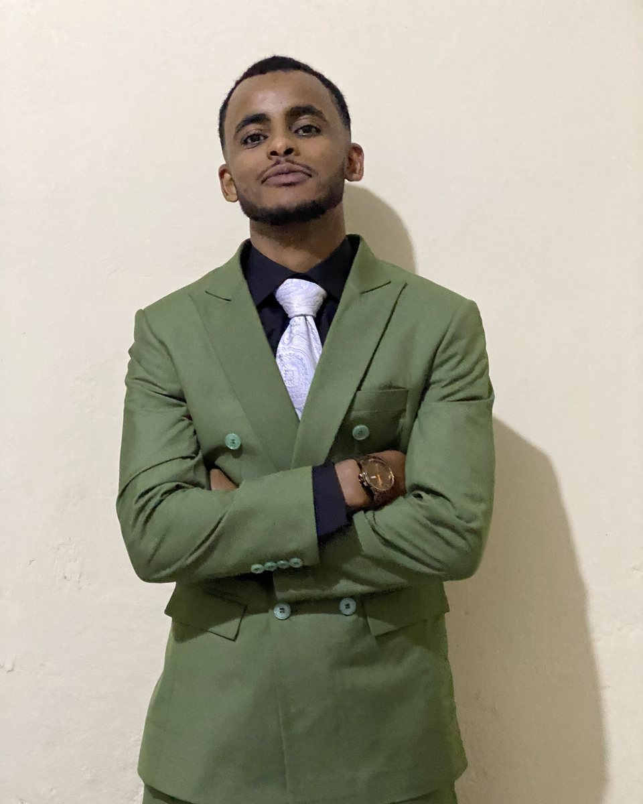

Sharif, OptimalLoopVenlo, Limburg
Even ingesproken, 40 seconden.
Het spraakbericht komt hier.
Hoi, met Sharif uit Venlo. Ik heb acht jaar in de horeca gewerkt, en wat ik het meest zag: eigenaren die naast de vloer nog een avond per week kwijt zijn aan het rooster, de inkoop of de mail.
Ik neem één van die klussen van je over. Jij kiest welke. Het kost honderdnegenenveertig euro per maand, exclusief btw. Scheelt het je na dertig dagen niet minstens twee uur per week, dan krijg je je geld terug.
Mijn enige vraag: welke klus kost jou de meeste tijd? Eén regel terug is genoeg. Succes, en een fijne dag.
Welke klus kost jou elke week de meeste tijd?
Antwoord gewoon op de mail. Eén regel is genoeg. Mail Sharif optimalloop@optimalloop.comOptimalLoop · Venlo, Limburg · KvK 96658517 · Privacy